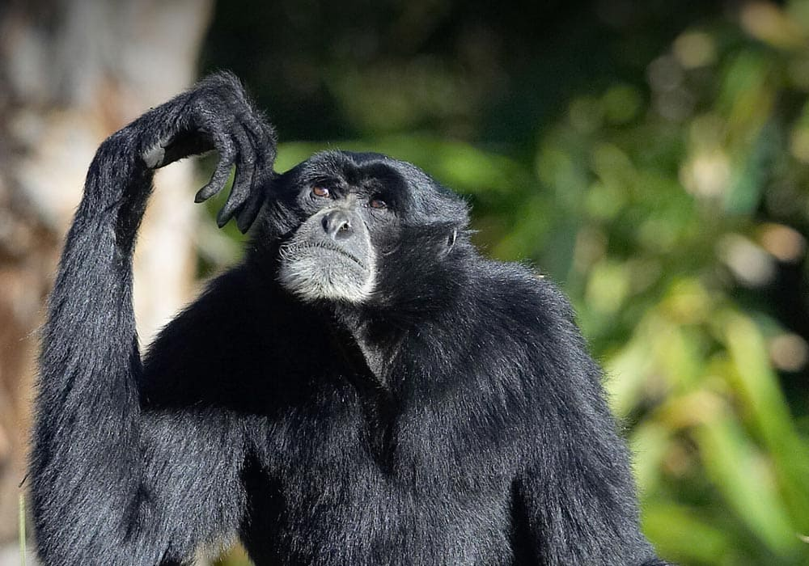
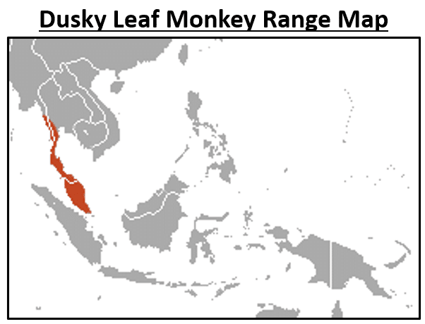

Scientific Name
Symphalangus syndactylus

Symphalangus syndactylus
Endangered
Siamangs have a grayish or pinkish throat sac, which they inflate during vocalizations. Their arms are longer than their legs and usually walk on two feet when traveling on ground and swing when on trees. Siamangs can range from being 29 to 35 inches tall and weigh around 23 pounds.

25-30 years
Fruit and new leaves
They usually have offspring every 2-3 years.
diurnal[1]
Usually consists of one male, one female, and Two to three children.
Leopards